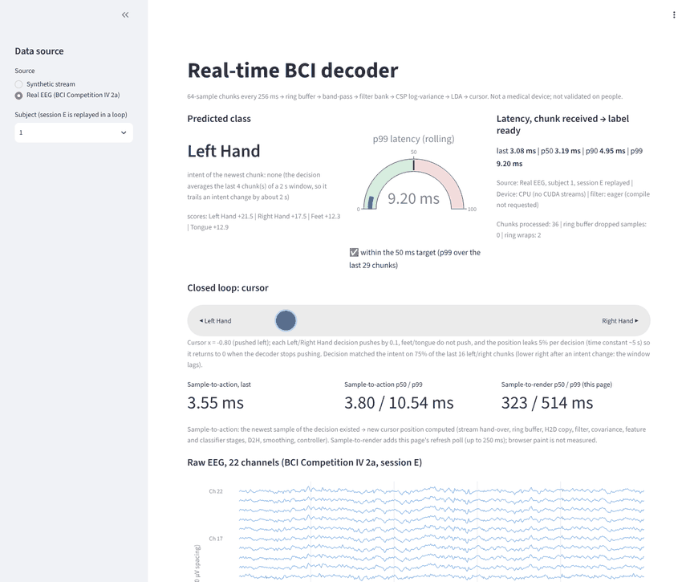
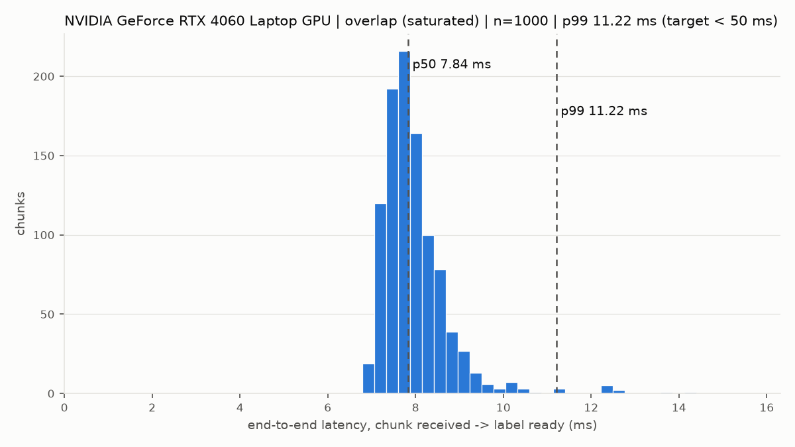
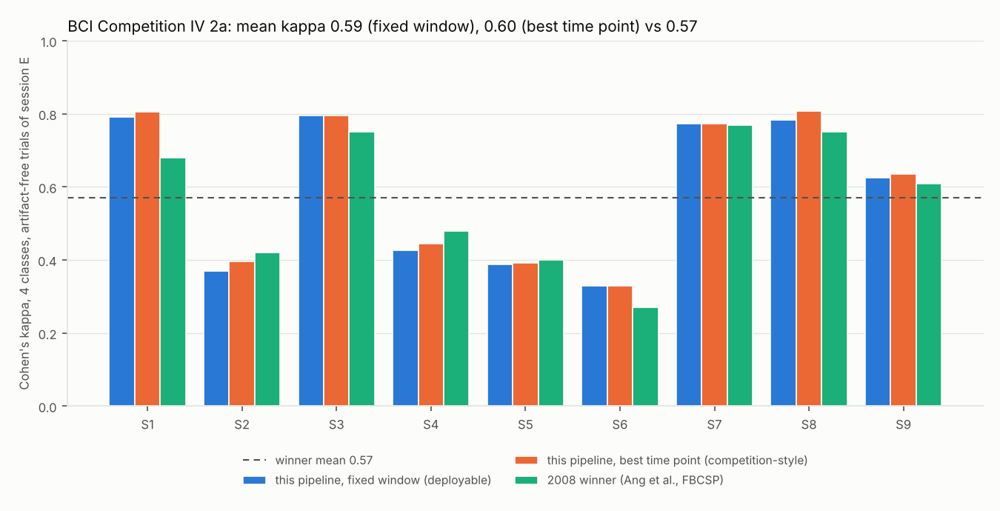
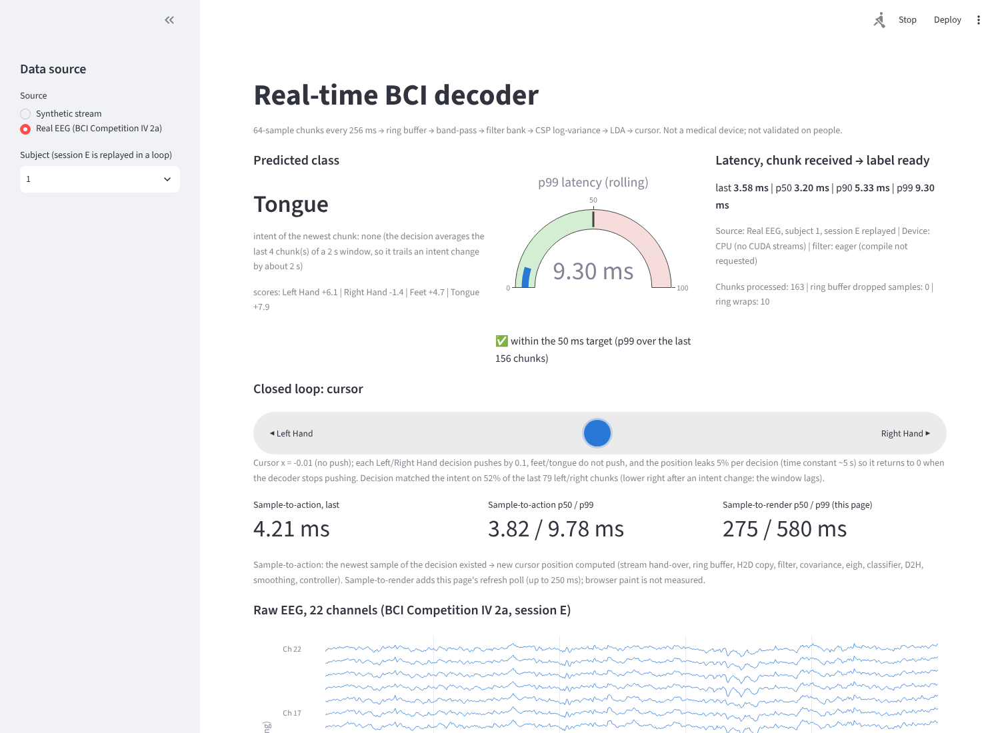

realtime-bci
Real-time EEG decoding on a GPU, with a closed-loop dashboard.
Chunks of 64 samples (256 ms at 250 Hz) go through a ring buffer into pinned memory, then through two CUDA streams: band-pass filter, covariance, classifier. The decoder runs on a synthetic generator and on the public BCI Competition IV 2a motor-imagery recordings, replayed directly or through Lab Streaming Layer. It has never run on a real amplifier or a live participant.
Source and documentation on GitHub

Results
| What | Result | Setup |
|---|---|---|
| End-to-end latency, 64 channels, synthetic, one chunk every 256 ms | p99 23.4 ms (target 50 ms) | RTX 4060 laptop, 1000 chunks |
| Real EEG over LSL, Riemannian decoder | median 4.1–7.3 ms, p99 6.5–26.0 ms over six runs; LSL jitter 0.05–0.08 ms | same laptop, 22 channels |
| Real EEG over LSL, filter-bank decoder | median 2.1 ms, p99 7.4 ms, max 11.2 ms in one run; LSL jitter 0.056 ms | same laptop, 22 channels |
| 4-class Cohen’s kappa, BCI Competition IV 2a, 9 subjects, train on session T, test on session E | 0.587 at a fixed window, 0.598 at the best time point | filter-bank CSP + LDA |
The 2008 competition winner scored 0.57. The difference here is +0.017 with a paired standard error of 0.018 over the nine subjects, so this is a match, not a win. The comparison is approximate: the competition scored a sample-by-sample causal output, this project scores one decision per chunk from a 2 s window plus a 4-chunk mean. Scores are on the experts’ artifact-free trials, as in the competition. No artifact removal is applied and the EOG channels are not used for decoding.
Figures



What to know before quoting the numbers
- The CUDA stream overlap did not reduce latency. The copy and kernel overlap is tiny (7 µs of an 11 µs copy), and the look-ahead variant is slower than the plain baseline.
- The real-data p99 moves between runs. In three of six runs about 1–2% of chunks ran several times slower. A diagnostic run excluded Python garbage collection and the host enqueue; the cause is open.
- The filter-bank decoder’s accuracy is verified on the GPU, and its latency rests on a single run. Its sample-to-action latency has not been measured.
- All timings come from one laptop with other applications open.
Run it
pip install torch==2.10.0 --index-url https://download.pytorch.org/whl/cu128
pip install -e ".[dev]"
python -m pytest -v -rs
python -m bci.gpu_pipeline benchmark --chunks 1000 --warmup 50 --runs overlap,baseline,paced --out-dir results
python -m streamlit run app/dashboard.pyDesign decisions are in SPEC.md, measurements and what went wrong in FINDINGS.md, and every claim with its status and evidence in CLAIMS.md.